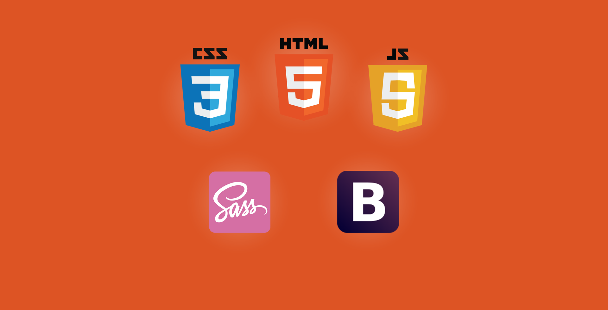
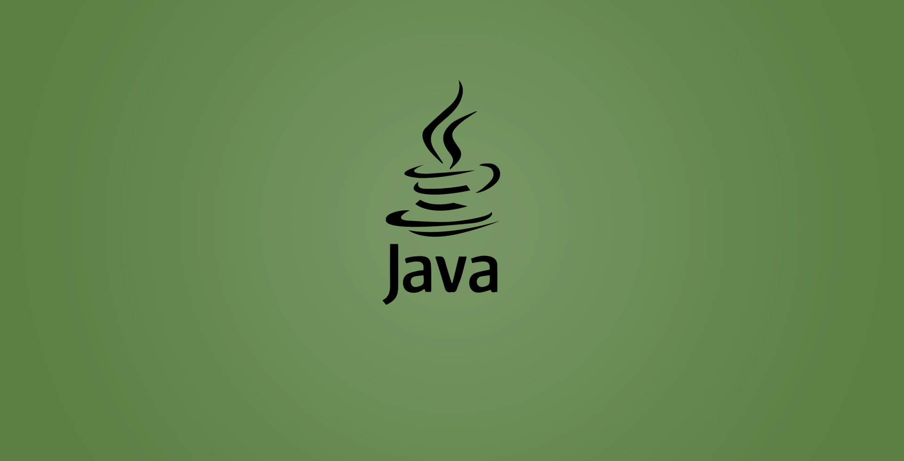

Je développe mes projets en utilisant les standards pour le développement Web.

Connaissance de Java orienté objet et Design Patterns avec la structure Spring. Développement orienté par les tests TDD.
Je développe mes projets en utilisant le JavaScript. C'est la plus important technologie de mon travail.

J'utilise le contrôle de version pour tous mes projets. Surtout GitHub. Mais pourquoi pas SVN?!